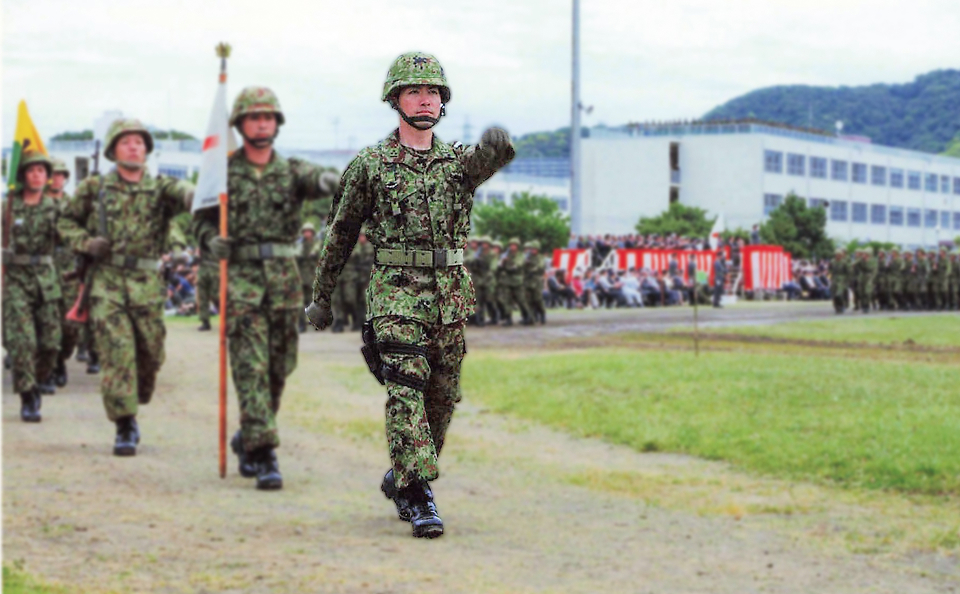

PROFILEプロフィール
鹿嶋 祐介
かしま ゆうすけ
- 生年月日
- 昭和55年11月23日
- 出身
- 千葉県市川市
- 現職
- 自由民主党 衆議院議員
- 役職
- 自由民主党組織運動本部団体総局安全保障関係団体副委員長
自由民主党国際局ウクライナ担当 - 所属委員会
- 安全保障委員会委員、財務金融委員会委員、政治改革特別委員会委員、沖縄及び北方問題に関する特別委員会委員
経歴
平成17年3月：法政大学工学部システム制御工学科卒 平成17年4月：陸上自衛隊 令和 4年5月：参議院議員 佐藤正久秘書 令和 5年3月：参議院議員 臼井正一秘書 令和 7年6月：自由民主党千葉県第四選挙区支部長 令和 8年2月：衆議院議員選挙当選
自衛官経歴
-
陸上自衛隊幹部自衛官として17年間勤務（最終階級：3等陸佐）
- 職種： 普通科（Infantry）
- 部隊歴： 陸上自衛隊幹部候補生学校、第34普通科連隊、第31普通科連隊、第117教育大隊、国際活動教育隊、陸上自衛隊富士学校、内閣官房新型コロナウイルス感染症対策室
- 資格： 空挺基本降下課程修了、格闘指導官
-
国際任務・危機管理への対応
- 国際活動教育隊において、PKO派遣及び在外邦人等保護措置に関する教育訓練を担当
- 内閣官房新型コロナウイルス感染症対策室に出向し、政府の感染症危機対応に従事
- 新型コロナウイルス感染症対応において、ダイヤモンド・プリンセス号への派遣任務に従事
- 災害派遣：中越沖地震、東日本大震災（指揮所勤務）
